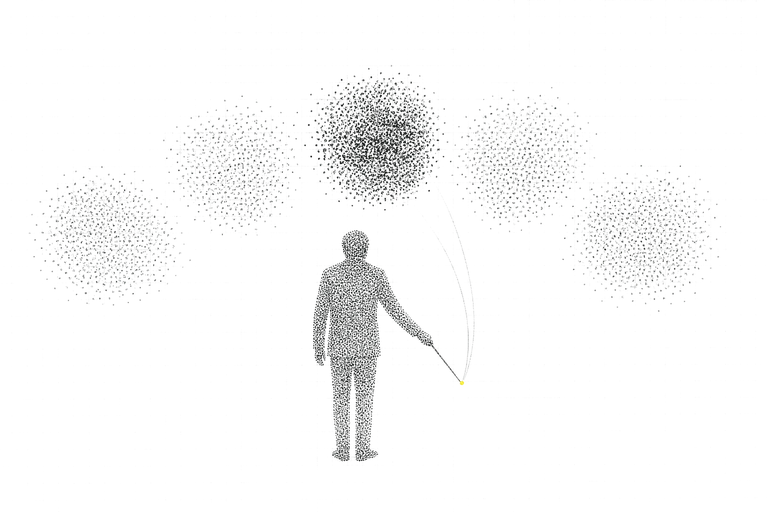

Cafe24 merchants, agentic commerce
Shopper intent arrives as an IR and leaves as a transaction. UCP and ACP gateways connect outside agents.


The whole loop, intent to discovery to decision to transaction to outcome to learning, runs on the merchant's side of the glass. The code enforces three rules. A hard constraint is a gate, not a ranking feature: ask for under 150,000 and a 160,000 product is not a slightly worse result, it is not a result.
The model compiles, plans and explains. It does not decide or calculate. Product selection belongs to the commerce engine; prices, discounts and totals are computed by deterministic code. No answer reaches a shopper unverified: every SKU, price and claim is checked against the live catalog, and unsupported claims are removed rather than softened.
The north star is neither conversations nor click-through. It is incremental contribution margin per 1,000 eligible sessions against a 10% holdout. That shoppers who used AI bought more is an association; this system exists to replace it with a causal number.
Want to hold this layer?
From experiment to execution, together.
Contact